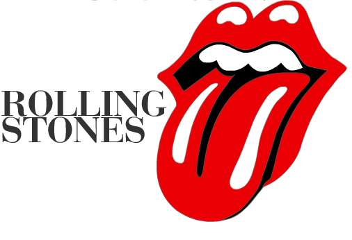

<div class="row">
  <div class="col-sm-6 col-md-12">
    <div class="thumbnail">
      
      <p>The Rolling Stones es una banda británica de rock originaria de Londres. La banda se fundó en abril de 1962 por Brian Jones, Mick Jagger, Keith Richards, Bill Wyman, Ian Stewart y Charlie Watts.2 Brian Jones fue despedido en junio de 1969, falleciendo tres semanas después, siendo reemplazado por el guitarrista Mick Taylor, que dejaría el grupo en 1975 y sería a su vez reemplazado por Ron Wood. Con el retiro de Bill Wyman en 1993 se incluyó al bajista Darryl Jones que, aunque toca con la banda desde la grabación del álbum Voodoo Lounge en 1994, no es un miembro oficial.</p>

        <iframe width="100%" height="400" src="https://www.youtube.com/embed/e5AIisWNvM4?ecver=1" frameborder="0" allowfullscreen></iframe>
    </div>
  </div>
</div>